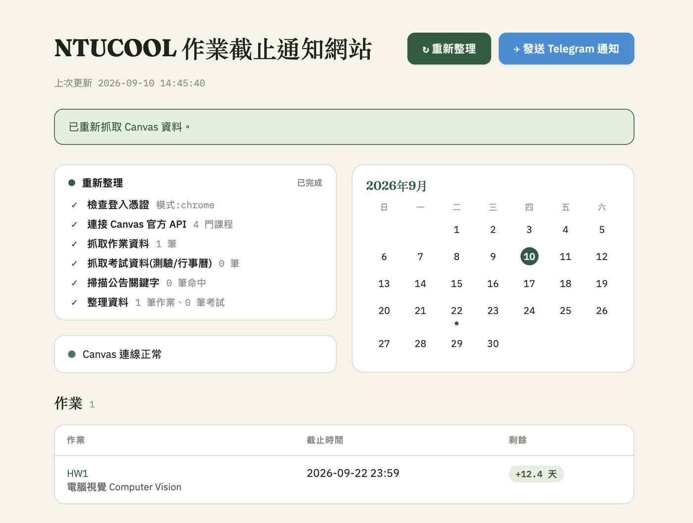

網頁系統 · Selected Work · 2026
作業預警系統
台大 NTUCOOL（Canvas LMS）常常把作業、考試截止日淹沒在一堆課程頁面裡。 這個工具自動抓取所有課程的作業與考試截止日期，用 launchd 排程 每小時檢查一次，快到期時透過 Telegram Bot 主動推播提醒， 另外還有一個可以手動觸發、即時看抓取進度的網頁面板。

要解決的問題
台大 NTUCOOL 上每門課的作業、考試截止日都散落在各自的課程頁面， 沒有一個地方能一次看完所有課程接下來的死線。更麻煩的是 NTUCOOL 這個 Canvas 站台不支援學生自行產生個人 API Token（設定頁沒有「已核准的整合」區塊）， 一般常見的「拿 token 打 API」做法在這裡直接行不通。
認證方式：讀本機 Chrome 的登入 session
既然沒有 token，這個工具改用讀取本機 Chrome 目前登入 NTUCOOL 的 session cookie
（靠 browser_cookie3
套件），不存密碼、不用手動複製貼上，也不必自動化登入流程去冒存密碼的風險。
代價是整個系統只能在使用者本機執行——雲端服務碰不到本機瀏覽器的資料，
所以這是刻意選擇的架構限制，不是技術債。中間也比較過爬蟲、Token、手動複製 cookie、
Bookmarklet、純前端讀 cookie 等將近十種方案，最後認證方式的取捨過程完整寫進專案的
README，作為之後回頭檢視決策的紀錄。
系統架構
自動抓取 API
main.py
用已認證的 session 打 Canvas 的作業 API，抓出所有課程即將到期的作業；
考試的部分比較特別——NTUCOOL 的舊版 /quizzes
API 會回 404，所以改成從作業 API 回傳的 is_quiz_assignment
欄位反推出 New Quizzes，再搭配 Calendar Events 與公告關鍵字掃描（低信度，只做提示、不觸發正式提醒）
補齊考試資訊。
排程：launchd 每小時檢查
本機常駐兩個 launchd 服務：一個是 RunAtLoad + KeepAlive
跑 Flask 常駐服務，另一個是 StartInterval=3600
每小時打一次 curl -X POST /api/notify。
故意讓排程打 API 而不是直接重跑一份 CLI 邏輯，這樣 CLI、排程、網頁按鈕三條觸發路徑
永遠共用同一套抓取與判斷邏輯，不會出現「網頁上看到的」跟「排程實際送出的」兜不起來的情況。
提醒本身是門檻式的（截止前 7 / 3 / 1 天各推播一次），用
state.json
記錄哪些提醒已經發過，避免同一個門檻重複轟炸。
Telegram Bot 通知
提醒最終都是透過自架的 Telegram Bot 推播給使用者，分成兩種模式： 排程觸發的門檻式提醒（快到期才推播），以及網頁面板手動按鈕觸發的 「不管門檻，直接列出所有未完成作業」摘要——想隨時確認目前戰況時不用等排程， 按一下就能收到完整清單。
網頁面板
除了背景排程，還做了一個 React + Flask 的輕量面板：手動觸發抓取、
即時輪詢顯示抓取進度（哪一步在跑、哪一步完成），作業/考試表格整列可點擊
直接跳轉回 NTUCOOL 對應頁面，右側搭配一個標示到期日的迷你月曆。
前後端共用同一套 progress_start / progress_step / progress_done
進度追蹤器，不管是排程還是手動按鈕觸發抓取，網頁上看到的都是同一份即時狀態。
學到的事：有時候最合理的架構不是「把什麼都搬上雲端」，而是誠實面對限制—— NTUCOOL 不給 API Token，就沒有一個雲端服務能安全、穩定地做到這件事。 把系統設計成本機常駐、用 launchd 排程，反而比硬要雲端化更簡單、更少地方會壞掉。